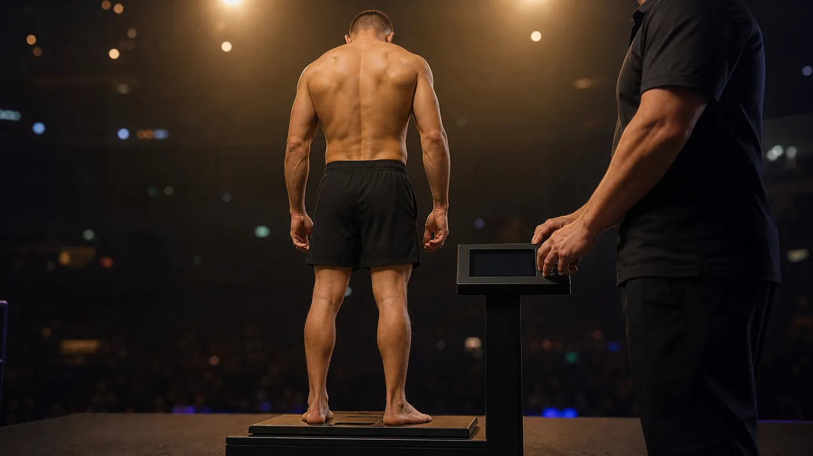

Wer am selben Abend einen UFC-Kampf und einen Boxkampf schaut, stolpert fast zwangsläufig darüber: Beide Kämpfer laufen als „Leichtgewicht“ ein, und trotzdem liegen gut neun Kilo zwischen ihren Limits. Zwischen dem olympischen Boxen und ONE Championship sind es beim gleichen Namen sogar mehr als 17 Kilo. Die Namen klingen einheitlich, die Zahlen sind es nicht.
Diese Seite sammelt die Gewichtsklassen der wichtigsten Verbände und Ligen an einem Ort: Profiboxen bei WBC, WBA, IBF und WBO, olympisches Boxen nach World Boxing, MMA nach den Unified Rules und in der UFC, GLORY, Kickboxen nach WAKO, Muay Thai nach IFMA und in Thailand sowie ONE Championship. Unter jeder Tabelle steht die Primärquelle mit Datum. Wo ein Verband in Pfund rechnet, haben wir die Kilogramm selbst exakt umgerechnet, weil die Dokumente der Verbände an einigen Stellen unterschiedlich runden.
Danach geht es um die Fragen hinter den Tabellen: warum es Gewichtsklassen überhaupt gibt, was beim Wiegen passiert und warum der „Weight Cut“ in der Forschung so schlecht wegkommt. Zum Schluss geht es um die Klasse, die für dich als Hobby-Sportler zählt.
Wichtig vorweg: Dieser Artikel erklärt Regeln und fasst Studien zusammen. Er ist keine Anleitung zum Gewichtmachen und keine medizinische Beratung. Wer vor einem Wettkampf Gewicht verlieren will, klärt das mit einer Ärztin oder einem Arzt und einer qualifizierten Ernährungsfachkraft.
Wie viele Gewichtsklassen gibt es im Boxen?
Im Profiboxen sind es 17 Gewichtsklassen bei WBA, IBF und WBO und 18 beim WBC. Die Limits der gemeinsamen 17 Klassen sind bei allen vier großen Weltverbänden gleich. Sie werden in Pfund festgelegt und reichen von 105 lb (47,63 kg) bis zum Schwergewicht, das nach oben offen ist. Der Unterschied ist das Bridgerweight, das inzwischen nur noch der WBC führt.
Gewichtsklassen im Profiboxen: WBC, WBA, IBF und WBO
| Klasse (deutsch) | Englische Namen | Limit lb | Limit kg | Wer führt sie |
|---|---|---|---|---|
| Strohgewicht | Strawweight · Mini Flyweight · Minimumweight | 105 | 47,63 | alle vier |
| Halbfliegengewicht | Light Flyweight · Jr. Flyweight | 108 | 48,99 | alle vier |
| Fliegengewicht | Flyweight | 112 | 50,80 | alle vier |
| Superfliegengewicht | Super Flyweight · Jr. Bantamweight | 115 | 52,16 | alle vier |
| Bantamgewicht | Bantamweight | 118 | 53,52 | alle vier |
| Superbantamgewicht | Super Bantamweight · Jr. Featherweight | 122 | 55,34 | alle vier |
| Federgewicht | Featherweight | 126 | 57,15 | alle vier |
| Superfedergewicht | Super Featherweight · Jr. Lightweight | 130 | 58,97 | alle vier |
| Leichtgewicht | Lightweight | 135 | 61,23 | alle vier |
| Halbweltergewicht | Super Lightweight · Jr. Welterweight | 140 | 63,50 | alle vier |
| Weltergewicht | Welterweight | 147 | 66,68 | alle vier |
| Halbmittelgewicht | Super Welterweight · Jr. Middleweight | 154 | 69,85 | alle vier |
| Mittelgewicht | Middleweight | 160 | 72,57 | alle vier |
| Supermittelgewicht | Super Middleweight | 168 | 76,20 | alle vier |
| Halbschwergewicht | Light Heavyweight | 175 | 79,38 | alle vier |
| Cruisergewicht | Cruiserweight · Jr. Heavyweight | 200 | 90,72 | alle vier |
| Bridgergewicht | Bridgerweight | 224 | 101,60 | nur WBC |
| Schwergewicht | Heavyweight | ohne Limit | ohne Limit | WBC ab 224 lb, WBA/IBF/WBO über 200 lb |
Quellen: WBC, The WBC Presents the Professional Boxing Divisions (16.04.2026); IBF Rules Governing Championship Contests (Fassung vom 13.08.2025); WBO Regulations of World Championship Contests; WBA: Bridgerweight abgeschafft (30.06.2026). Die Limits sind in Pfund festgelegt, die kg-Werte haben wir exakt umgerechnet (1 lb = 0,45359237 kg); die Verbände runden in ihren Dokumenten teils abweichend. Stand: Oktober 2026.
In den leichten Klassen liegen zwischen zwei Limits oft nur drei oder vier Pfund, also 1,4 bis 1,8 Kilo. Nach oben werden die Abstände größer. Vom Halbschwergewicht (175 lb) bis zum Cruisergewicht (200 lb) sind es gut elf Kilo, und darüber war lange alles Schwergewicht. Genau dort hat der WBC angesetzt.
Bridgerweight: die Klasse, die nur der WBC hat
Im November 2020 hat der WBC das Bridgerweight für Boxer zwischen 200 und 224 lb eingeführt, laut WBC-Präsident Mauricio Sulaimán mit dem Ziel, die Boxer zu schützen. Benannt ist die Klasse nach Bridger Walker, einem Jungen, der während der Pandemie seine vierjährige Schwester gegen einen angreifenden Hund verteidigt hatte. Wer als Bridgerweight gelistet ist, darf weiterhin im Schwergewicht antreten. Auf seiner Übersichtsseite begründet der WBC die Zwischenklassen allgemein damit, dass Boxer weniger drastisch zu- oder abnehmen müssen.
Die WBA hat am 1. Dezember 2023 nachgezogen und die Klasse am 30. Juni 2026 wieder abgeschafft. Ihre beiden Titelträger wurden in die Ranglisten des Cruiser- beziehungsweise Schwergewichts übernommen. IBF und WBO führen das Bridgerweight in ihren Regelwerken nicht. Dort beginnt das Schwergewicht oberhalb von 200 lb, also bei mehr als 90,72 kg.
Super, Junior, Halb: warum die Namen nicht zusammenpassen
IBF und WBO nennen viele Klassen in ihren Regelwerken „Junior“, etwa Jr. Flyweight oder Jr. Welterweight. Der WBC sagt „Super“ oder „Light“, im Deutschen haben sich „Halb-“ und „Super-“ eingebürgert. Gemeint ist jeweils dasselbe Limit. Die WBO führt das Cruisergewicht in ihrem Regelwerk sogar als „Jr. Heavyweight“. Wer Ergebnisse aus verschiedenen Quellen vergleicht, hält sich deshalb besser an die Pfundzahl als an den Namen.
Wann wird im Profiboxen gewogen?
Das offizielle Wiegen liegt in der Regel am Vortag. Bei der IBF muss es laut Regelwerk 20 bis 30 Stunden vor dem ersten Kampf des Abends stattfinden, sofern die örtliche Kommission nichts anderes festlegt. Bei IBF-Titelkämpfen kommt am Kampfmorgen zwischen 8 und 10 Uhr ein zweites Wiegen dazu. Je nach Klasse darf ein Boxer dann höchstens 10 bis 14 lb über dem Limit liegen, im Weltergewicht also bei höchstens 158 statt 147 lb. Für Schwergewichts-Titelkämpfe und Vereinigungskämpfe gilt dieses zweite Wiegen nicht.
Der WBC setzt früher an. Nach eigenen Angaben gibt es dort Kontrollwiegen 30, 14 und 7 Tage vor dem Kampf, damit Gewicht schrittweise und nicht in den letzten Stunden verloren wird.
Welche Gewichtsklassen gibt es im olympischen Boxen?
Im olympischen und im Amateurboxen gibt es bei World Boxing seit dem 1. Januar 2025 je zehn Gewichtsklassen für Männer und Frauen, festgelegt in Kilogramm. World Boxing ist seit Februar 2025 vom IOC vorläufig als Weltverband für das olympische Boxen anerkannt. Im März 2025 hat das IOC Boxen wieder ins Programm für Los Angeles 2028 aufgenommen. Für die Spiele wurden daraus je sieben Klassen ausgewählt. In Paris 2024 waren es noch sieben für Männer und sechs für Frauen.
Gewichtsklassen im olympischen Boxen für Männer und Frauen (World Boxing, Elite)
| Nr. | Männer | bis kg | bis lb | Frauen | bis kg | bis lb |
|---|---|---|---|---|---|---|
| 1 | Fliegengewicht | 50 | 110,2 | Halbfliegengewicht | 48 | 105,8 |
| 2 | Bantamgewicht ★ | 55 | 121,3 | Fliegengewicht ★ | 51 | 112,4 |
| 3 | Leichtgewicht ★ | 60 | 132,3 | Bantamgewicht ★ | 54 | 119,0 |
| 4 | Weltergewicht ★ | 65 | 143,3 | Federgewicht ★ | 57 | 125,7 |
| 5 | Halbmittelgewicht ★ | 70 | 154,3 | Leichtgewicht ★ | 60 | 132,3 |
| 6 | Mittelgewicht | 75 | 165,3 | Weltergewicht ★ | 65 | 143,3 |
| 7 | Halbschwergewicht ★ | 80 | 176,4 | Halbmittelgewicht ★ | 70 | 154,3 |
| 8 | Cruisergewicht | 85 | 187,4 | Mittelgewicht ★ | 75 | 165,3 |
| 9 | Schwergewicht ★ | 90 | 198,4 | Halbschwergewicht | 80 | 176,4 |
| 10 | Superschwergewicht ★ | über 90 | über 198,4 | Schwergewicht | über 80 | über 176,4 |
★ = olympische Klasse in Los Angeles 2028. Quellen: World Boxing Competition Rules (in Kraft seit November 2024, Klassen gültig ab 01.01.2025); World Boxing Cup 2027, Event Guidelines (Juni 2026, bestätigt je zehn Klassen); World Boxing zu den LA28-Klassen (10.04.2025). Die Klassen sind in kg festgelegt, die lb-Werte haben wir umgerechnet. Stand: Oktober 2026.
Zwei Regeln unterscheiden das olympische Boxen stärker vom Profiboxen als die Namen. Erstens gibt es eine Untergrenze: Beim ersten offiziellen Wiegen eines Turniers muss dein Gewicht über dem Minimum der Klasse liegen, sonst gewinnt dein Gegner kampflos. Ein Mann im Bantamgewicht muss also mehr als 50 kg wiegen. Zweitens wird an den Wettkampftagen morgens gewogen, und du musst das Limit an dem Tag bringen, an dem du boxt. Zwischen dem Ende des Tageswiegens und dem ersten Kampf müssen mindestens drei Stunden liegen. Wer über mehrere Tage im Turnier steht, muss also an jedem Kampftag erneut unter dem Limit liegen.
Welche Gewichtsklassen gibt es in der UFC und im MMA?
Die UFC führt acht Gewichtsklassen für Männer und drei für Frauen. Grundlage sind die Unified Rules of MMA der Association of Boxing Commissions (ABC). Sie kennen insgesamt 15 Klassen von 105 lb bis über 265 lb. Vier davon, das Superleicht-, Superwelter-, Supermittel- und Cruisergewicht, hat die ABC im Juli 2017 einstimmig ergänzt. Die UFC nutzt sie nicht.
Gewichtsklassen im MMA (Unified Rules) und in der UFC, in lb und kg
| Klasse | Unified Rules: Bereich | Limit kg | In der UFC |
|---|---|---|---|
| Atomgewicht | bis 105 lb | 47,63 | nein |
| Strohgewicht | über 105 bis 115 lb | 52,16 | Frauen |
| Fliegengewicht | über 115 bis 125 lb | 56,70 | Männer und Frauen |
| Bantamgewicht | über 125 bis 135 lb | 61,23 | Männer und Frauen |
| Federgewicht | über 135 bis 145 lb | 65,77 | Männer |
| Leichtgewicht | über 145 bis 155 lb | 70,31 | Männer |
| Superleichtgewicht | über 155 bis 165 lb | 74,84 | nein |
| Weltergewicht | über 165 bis 170 lb | 77,11 | Männer |
| Superweltergewicht | über 170 bis 175 lb | 79,38 | nein |
| Mittelgewicht | über 175 bis 185 lb | 83,91 | Männer |
| Supermittelgewicht | über 185 bis 195 lb | 88,45 | nein |
| Halbschwergewicht | über 195 bis 205 lb | 92,99 | Männer |
| Cruisergewicht | über 205 bis 225 lb | 102,06 | nein |
| Schwergewicht | über 225 bis 265 lb | 120,20 | Männer (in der UFC ab über 205 lb) |
| Superschwergewicht | über 265 lb | ohne Limit | nein |
Quellen: ABC, Unified Rules of Mixed Martial Arts (zuletzt geändert 06.08.2025); UFC, Understanding UFC Weight Classes (28.05.2024); offizielle UFC-Rankings (Stand Ende September 2026). kg-Werte exakt umgerechnet. Stand: Oktober 2026.
Für Kämpfe ohne Titel gilt in der UFC eine Toleranz von einem Pfund über dem Limit, bei Titelkämpfen keine. Gewogen wird am Vortag zwischen 9 und 11 Uhr Ortszeit. Wer beim ersten Versuch zu schwer ist, bekommt je nach zuständiger Athletic Commission bis zu eine Stunde extra. Verfehlt ein Kämpfer das Limit, kann das laut UFC mehrere Folgen haben: Er gibt einen Teil seiner Börse an den Gegner ab, der Kampf findet in einem ausgehandelten Catchweight statt, oder er fällt aus.
Bei den Frauen gibt es in der UFC das Stroh-, Fliegen- und Bantamgewicht. In den offiziellen Rankings, Stand Ende September 2026, taucht keine weitere Frauenklasse auf.
Bei der Suche nach UFC-Gewichtsklassen taucht immer wieder dieselbe Frage auf: Gibt es in der UFC ein Schwergewicht mit 90 kg? Nein. 90 kg liegen unter dem Limit des Halbschwergewichts von 205 lb (92,99 kg). Weil die UFC kein Cruisergewicht führt, beginnt ihr Schwergewicht direkt oberhalb des Halbschwergewichts und endet bei 265 lb (120,20 kg).
Welche Gewichtsklassen gibt es bei GLORY?
Bei der Kickbox-Liga GLORY wird laut Regelwerk vom 16. März 2026 in sechs Gewichtsklassen gekämpft, festgelegt in Kilogramm: Federgewicht bis 65 kg, Leicht bis 70, Welter bis 77, Mittel bis 85, Halbschwer bis 95 und Schwergewicht darüber. Eine eigene Frauenklasse führt das aktuelle Regelwerk nicht auf. Außerhalb dieser Klassen sind Catchweight-Kämpfe möglich, wenn GLORY und beide Kämpfer zustimmen.
Gewichtsklassen bei GLORY Kickboxing
| Klasse | Bereich | Limit kg | Limit lb |
|---|---|---|---|
| Federgewicht | bis 65 kg | 65 | 143,3 |
| Leichtgewicht | über 65 bis 70 kg | 70 | 154,3 |
| Weltergewicht | über 70 bis 77 kg | 77 | 169,8 |
| Mittelgewicht | über 77 bis 85 kg | 85 | 187,4 |
| Halbschwergewicht | über 85 bis 95 kg | 95 | 209,4 |
| Schwergewicht | über 95 kg | ohne Limit | ohne Limit |
Quelle: GLORY Kickboxing Rules and Regulations, Abschnitt 2.01 (offizielles Regelwerk, Stand 16.03.2026, verlinkt auf glorykickboxing.com/rules). Dazu kommen vereinbarte Catchweight-Kämpfe. lb-Werte umgerechnet. Stand: Oktober 2026.
Gewogen wird am Tag vor dem Event. Wer das Limit nach der eingeräumten Frist verfehlt, darf nur kämpfen, wenn GLORY, der Gegner und gegebenenfalls die Aufsichtsbehörde zustimmen. Dann kann GLORY bis zu 20 % der Börse an den Gegner weitergeben, wenn das Übergewicht ein Kilo oder weniger beträgt, bei mehr als einem Kilo bis zu 30 %. Wie sich GLORY und die UFC in Regeln und Kampfstil unterscheiden, erklären wir in GLORY vs. UFC: der echte Unterschied.
Welche Gewichtsklassen gibt es im Kickboxen nach WAKO?
Im Amateur-Kickboxen nach WAKO hängen die Klassen von der Disziplin ab. Die Ringdisziplinen Full Contact, Low Kick und K-1 nutzen bei den Senioren (19 bis 40 Jahre) zwölf Männer- und sieben Frauenklassen, von −51 bis +91 kg beziehungsweise von −48 bis +70 kg. Die Tatami-Disziplinen Point Fighting, Light Contact und Kick Light arbeiten mit gröberen Stufen: neun Klassen bei den Männern, sechs bei den Frauen.
Gewichtsklassen im WAKO-Kickboxen, Senioren: Ring- und Tatami-Disziplinen
| Nr. | Ring, Männer | Ring, Frauen | Tatami, Männer | Tatami, Frauen |
|---|---|---|---|---|
| 1 | −51 kg (112,4 lb) | −48 kg (105,8 lb) | −57 kg (125,7 lb) | −50 kg (110,2 lb) |
| 2 | −54 kg (119,0 lb) | −52 kg (114,6 lb) | −63 kg (138,9 lb) | −55 kg (121,3 lb) |
| 3 | −57 kg (125,7 lb) | −56 kg (123,5 lb) | −69 kg (152,1 lb) | −60 kg (132,3 lb) |
| 4 | −60 kg (132,3 lb) | −60 kg (132,3 lb) | −74 kg (163,1 lb) | −65 kg (143,3 lb) |
| 5 | −63,5 kg (140,0 lb) | −65 kg (143,3 lb) | −79 kg (174,2 lb) | −70 kg (154,3 lb) |
| 6 | −67 kg (147,7 lb) | −70 kg (154,3 lb) | −84 kg (185,2 lb) | +70 kg |
| 7 | −71 kg (156,5 lb) | +70 kg | −89 kg (196,2 lb) | |
| 8 | −75 kg (165,3 lb) | −94 kg (207,2 lb) | ||
| 9 | −81 kg (178,6 lb) | +94 kg | ||
| 10 | −86 kg (189,6 lb) | |||
| 11 | −91 kg (200,6 lb) | |||
| 12 | +91 kg |
Ring = Full Contact, Low Kick, K-1. Tatami = Point Fighting, Light Contact, Kick Light. Senioren = 19 bis 40 Jahre. Quellen: WAKO Rules (Version 2 vom 04.05.2022), Kapitel 2, Art. 3.5 und Kapitel 7, Art. 3.3; WAKO-Vorstandsbeschlüsse vom 20.03.2026 (keine Änderung der Gewichtsklassen). lb-Werte umgerechnet. Stand: Oktober 2026.
Die älteren Junioren (17 und 18 Jahre) kämpfen im Ring in denselben Klassen wie die Senioren. Wichtig für die Meldung: Im Ring wirst du nach deinem tatsächlichen Gewicht gemeldet und darfst laut WAKO höchstens eine Klasse über deinem echten Gewicht starten. Bei Welt- und Kontinentalmeisterschaften findet das offizielle Wiegen 48 bis 72 Stunden vor Turnierbeginn statt. Wer zu schwer ist, bekommt innerhalb der offiziellen Zeit genau eine zweite Chance, eine Stunde nach dem ersten Versuch. In den Ringdisziplinen kommt bei diesen Turnieren an jedem Kampftag ein Pflichtwiegen am Morgen dazu, gekämpft wird in der Regel frühestens drei Stunden später.
An den Gewichtsklassen hat der WAKO-Vorstand mit seinen Beschlüssen vom 20. März 2026 nichts geändert. Neu ist unter anderem, dass im K-1 ab dem 1. Januar 2027 Clinchen und Festhalten nicht mehr erlaubt sind. Mehr zur Profi-Szene im Kickboxen findest du in unserem Artikel King of Kings (KOK) erklärt.
Welche Gewichtsklassen gibt es im Muay Thai?
Im Amateur-Muay-Thai legt die IFMA die Klassen fest. Laut Regelwerk vom 11. Mai 2026 kämpfen Männer in der Elite-Kategorie in 13 Gewichtsklassen von 48 kg bis über 91 kg, Frauen in elf Klassen von 45 kg bis über 75 kg. Eine 45-kg-Klasse für Männer gibt es nur bei ausgewählten Multisport-Veranstaltungen.
Gewichtsklassen im Muay Thai nach IFMA, Elite
| Nr. | Männer (Elite) | Frauen (Elite) |
|---|---|---|
| 1 | 45 kg (99,2 lb)* | 45 kg (99,2 lb) |
| 2 | 48 kg (105,8 lb) | 48 kg (105,8 lb) |
| 3 | 51 kg (112,4 lb) | 51 kg (112,4 lb) |
| 4 | 54 kg (119,0 lb) | 54 kg (119,0 lb) |
| 5 | 57 kg (125,7 lb) | 57 kg (125,7 lb) |
| 6 | 60 kg (132,3 lb) | 60 kg (132,3 lb) |
| 7 | 63,5 kg (140,0 lb) | 63,5 kg (140,0 lb) |
| 8 | 67 kg (147,7 lb) | 67 kg (147,7 lb) |
| 9 | 71 kg (156,5 lb) | 71 kg (156,5 lb) |
| 10 | 75 kg (165,3 lb) | 75 kg (165,3 lb) |
| 11 | 81 kg (178,6 lb) | über 75 kg |
| 12 | 86 kg (189,6 lb) | |
| 13 | 91 kg (200,6 lb) | |
| 14 | über 91 kg |
* Die 45-kg-Klasse der Männer gibt es nur bei ausgewählten Multisport-Veranstaltungen. Quelle: IFMA Rules & Regulations for International Competition (revidiert am 11.05.2026), Abschnitt Weight Classifications. lb-Werte umgerechnet. Stand: Oktober 2026.
Die IFMA wiegt mehrfach: offiziell am Tag vor Turnierbeginn, dann an jedem Wettkampfmorgen, und ein weiteres Wiegen ist jederzeit vor dem Kampf möglich. Der erste Kampf des Tages beginnt frühestens drei Stunden nach dem Ende des Morgenwiegens, sofern die Organisatoren nach Rücksprache mit den Ärzten nichts anderes erlauben.
Und im Profi-Muay-Thai in Thailand?
Die großen Stadien in Bangkok rechnen in Pfund. Das Rajadamnern Stadium nennt auf seiner Website 13 eigene Gewichtsklassen, vom Minifliegengewicht mit 105 lb (47,63 kg) bis zum Mittelgewicht mit 160 lb (72,57 kg). Die Pfund-Grenzen entsprechen denen des Profiboxens. Für die schwereren Klassen verweist die Seite auf die allgemeinen Klassen des World Muaythai Council (WMC), die bis zum Superschwergewicht über 210 lb reichen.
Was ist bei ONE Championship anders?
ONE Championship prüft vor dem Wiegen, ob die Kämpfer ausreichend hydriert sind. Alle Athleten absolvieren 24 bis 48 Stunden vor dem Event einen kombinierten Hydrationstest und Wiegetermin. Die Urinprobe wird unter Aufsicht abgegeben und mit einem Refraktometer gemessen; das spezifische Gewicht darf höchstens 1,025 betragen. Erst wer diesen Test besteht, darf auf die Waage. Beides muss direkt nacheinander klappen, innerhalb eines Zeitfensters von drei Stunden.
Wer scheitert, kann außerhalb des Fensters noch eine hydrierte Probe abgeben und sich wiegen lassen, um einen Catchweight-Kampf auszuhandeln. Das geht nur, wenn beide Athleten innerhalb von 105 % des offiziellen hydrierten Gewichts des anderen liegen. Wer den Test nicht bestanden hat, gibt außerdem einen Teil seiner Börse an den Gegner ab.
Anlass für diese Regeln war ein Todesfall. Im Dezember 2015 starb der 21-jährige chinesische Kämpfer Yang Jian Bing, nachdem er vor einem Kampf auf den Philippinen beim Gewichtmachen zusammengebrochen war. Laut Veranstalter war Herz-Lungen-Versagen die Ursache. Noch im selben Monat kündigte ONE an, das Gewichtmachen durch Austrocknung zu verbieten und die Athleten stärker zu überwachen.
In der Tabelle unten fällt auf: Die Limits liegen bei ONE jeweils eine Stufe höher als bei gleichnamigen Klassen der UFC. Das ONE-Fliegengewicht endet bei 135 lb, dort, wo in der UFC das Bantamgewicht endet.
Gewichtsklassen bei ONE Championship
| Klasse bei ONE | Bereich lb | Limit kg | Gleiches Limit heißt in der UFC |
|---|---|---|---|
| Atomgewicht | über 105 bis 115 | 52,16 | Strohgewicht |
| Strohgewicht | über 115 bis 125 | 56,70 | Fliegengewicht |
| Fliegengewicht | über 125 bis 135 | 61,23 | Bantamgewicht |
| Bantamgewicht | über 135 bis 145 | 65,77 | Federgewicht |
| Federgewicht | über 145 bis 155 | 70,31 | Leichtgewicht |
| Leichtgewicht | über 155 bis 170 | 77,11 | Weltergewicht |
| Weltergewicht | über 170 bis 185 | 83,91 | Mittelgewicht |
| Mittelgewicht | über 185 bis 205 | 92,99 | Halbschwergewicht |
| Halbschwergewicht | über 205 bis 225 | 102,06 | keine Klasse (Unified Rules: Cruisergewicht) |
| Schwergewicht | über 225 bis 265 | 120,20 | Schwergewicht |
Quelle: ONE Championship, Martial Arts: Weight Classes und Hydration & Weigh-In System (abgerufen im Oktober 2026). Auf derselben Seite stehen die Regeln für MMA, Muay Thai, Kickboxen und Grappling. kg-Werte exakt umgerechnet. Stand: Oktober 2026.
Warum bedeutet „Leichtgewicht“ nicht überall dasselbe?
Weil jeder Verband seine Klassen selbst festlegt, in Pfund oder in Kilogramm. Die Namen stammen aus dem Boxen, die Zahlen dahinter hat jede Organisation selbst gesetzt. Das Leichtgewicht reicht im olympischen Boxen bis 60 kg, im Profiboxen bis 61,23 kg, bei GLORY bis 70 kg, in der UFC bis 70,31 kg und bei ONE bis 77,11 kg. Beim Weltergewicht sieht es ähnlich aus: 65 kg bei World Boxing, 66,68 kg im Profiboxen, 77 kg bei GLORY, 77,11 kg in der UFC und 83,91 kg bei ONE.
Gleicher Name, anderes Limit: Leicht- und Weltergewicht je Organisation
Obergrenzen in kg. World Boxing: olympisches Boxen, Männer. Profiboxen: WBC, WBA, IBF, WBO. Quellen wie in den Tabellen oben; Pfund-Limits exakt umgerechnet. Stand: Oktober 2026.
Praktisch heißt das: Ein Weltergewicht in der UFC und eines bei GLORY sind fast gleich schwer, ein Weltergewicht im Profiboxen liegt gut zehn Kilo darunter. Und das Leichtgewicht bei ONE hat mit 170 lb genau das Limit des Weltergewichts in der UFC. Wenn du Ergebnisse, Rekorde oder Kämpfer vergleichst, schau deshalb auf die Zahl hinter dem Namen.
Warum gibt es überhaupt Gewichtsklassen?
Weil Masse im Kampfsport Wucht bedeutet. Messbar ist das am Schlag: In einer biomechanischen Untersuchung mit olympischen Boxern aus fünf Gewichtsklassen (Walilko und Kollegen, 2005) lag die Kraft gerader Schläge zum Kinn im Mittel bei 3.427 Newton. In den schwereren Klassen war sie höher, vor allem weil mehr effektive Masse hinter dem Schlag stand. Die Autoren schreiben, dass die Schwere des Treffers mit der Gewichtsklasse zunimmt. Der WBC formuliert den Zweck der Klassen auf seiner Website so: Sie sollen faire Kämpfe auf Augenhöhe sichern und Leben schützen.
Das Problem ist, dass das System einen Anreiz schafft, es zu umgehen. Wer sich vor dem Wiegen leichter macht und danach wieder zunimmt, steht am Kampfabend einem nominell gleich schweren, tatsächlich aber leichteren Gegner gegenüber. Eine systematische Übersicht mit 16 Studien und 4.432 Athleten (Matthews und Kollegen, 2019) kommt zu einem deutlichen Ergebnis: Durch die Zunahme nach dem Wiegen können Athleten bis zu drei Gewichtsklassen höher kämpfen als in der Klasse, in der sie offiziell gewogen wurden. Eine Auswertung von fünf MMA-Events in Kalifornien (Kirk und Kollegen, 2020) fand, dass die Profis typischerweise mindestens ein bis zwei Klassen über ihrer offiziellen Klasse antreten.
Die Gewichtsklasse beschreibt also das Gewicht auf der Waage. Mit dem Gewicht im Ring hat sie im Profisport oft nur noch lose zu tun.
Was passiert beim Wiegen, und was ist ein Weight Cut?
Beim offiziellen Wiegen wird festgestellt, ob du das Limit deiner Klasse einhältst. Profis stehen meist am Vortag auf der Waage, Amateure bei World Boxing, IFMA und in den WAKO-Ringdisziplinen am Kampfmorgen. Ein Weight Cut, auf Deutsch Gewichtmachen, ist der Versuch, in den Tagen vor dem Wiegen schnell Gewicht zu verlieren, vor allem Wasser, und es danach wieder aufzufüllen. In der Forschung heißt das Rapid Weight Loss, gefolgt von Rapid Weight Gain.

Wie verbreitet ist das?
Sehr. Eine Übersichtsarbeit von Franchini und Kollegen (2012) beziffert die Verbreitung über die Kampfsportarten hinweg auf rund 50 %. In einer Befragung von 822 Judoka (Artioli und Kollegen, 2010) gaben 86 % an, schon einmal für einen Wettkampf Gewicht verloren zu haben, angefangen hatten sie damit im Schnitt mit 12,6 Jahren. Eine Online-Umfrage unter 637 Athleten aus sieben Kampfsportarten (Barley und Kollegen, 2018) fand Gewichtsmanipulation in allen Disziplinen, am stärksten im MMA: 76 % der MMA-Athleten nannten die Sauna, 67 % das sogenannte Water Loading.
Die größten gemessenen Werte stammen ebenfalls aus dem MMA. In der Übersicht von Matthews und Kollegen betraf das zwei verschiedene MMA-Gruppen: In der einen lag der Verlust vor dem Wiegen im Schnitt bei 7,4 kg, etwa 10 % des Körpergewichts, in der anderen die Zunahme nach dem Wiegen ebenfalls bei 7,4 kg.
Was sagt die Forschung zu den Risiken?
Eine Fallstudie aus Liverpool (Kasper und Kollegen, 2019) hat einen MMA-Profi über acht Wochen begleitet. Sein Gewicht sank um 18,1 %, von 80,2 auf 65,7 kg. Allein in den letzten 24 Stunden vor dem Wiegen verlor er durch Austrocknung 9,3 % seiner Körpermasse. Die Blutwerte zeigten danach einen erhöhten Natriumspiegel und eine akute Nierenschädigung, dazu Zeichen eines Energiemangels mit stark gesunkenem Testosteron.
Auch über viele Studien hinweg sieht es nicht besser aus. Eine Übersichtsarbeit zur Nierenfunktion (Lakicevic und Kollegen, 2021) wertete Studien mit rund 5 % Gewichtsverlust innerhalb einer Woche oder weniger aus. In den meisten stiegen Kreatinin, Harnstoff und Urindichte deutlich an, ein Muster aus Austrocknung und akuter Belastung der Nieren. Wie es enden kann, dokumentiert ein Bericht der US-Gesundheitsbehörde CDC: Zwischen dem 7. November und dem 9. Dezember 1997 starben drei zuvor gesunde College-Ringer, während sie für einen Wettkampf schnell Gewicht verloren. Alle drei hatten in den Stunden vor dem Wiegen gehungert, kaum getrunken und versucht, möglichst viel zu schwitzen. Sie starben an Überhitzung und Austrocknung.
Bringt der Weight Cut wenigstens etwas?
Die Datenlage spricht dagegen. Laut der Übersicht von Barley und Kollegen (2019) ist die Wirkung auf die Leistung unklar; größere Cuts von etwa 5 % des Körpergewichts in weniger als 24 Stunden verschlechtern aber die Leistung bei wiederholten Belastungen, also genau das, was eine dritte Runde verlangt. In 71 IBF-Titelkämpfen (Daniele und Kollegen, 2016) nahmen die Boxer zwischen den beiden Wiegeterminen im Schnitt 2,52 kg zu, ein Zusammenhang mit Sieg oder Niederlage fand sich nicht. Zum selben Ergebnis kamen Untersuchungen an 124 MMA-Profis in Kalifornien (Kirk und Kollegen, 2020) und an 100 Boxerinnen und Boxern einer australischen Meisterschaft im Amateurboxen (Reale und Kollegen, 2017).
Unterm Strich ist das Risiko belegt, der Vorteil nicht. Wie man Gewicht „richtig“ macht, steht deshalb hier bewusst nicht.
Welche Gewichtsklasse ist für dich als Hobby-Sportler relevant?
Die, in der du mit deinem normalen Gewicht liegst. Im Amateurbereich ist das die gesündeste Wahl und meistens die einzige, die mit den Regeln funktioniert: Bei World Boxing, IFMA und in den WAKO-Ringdisziplinen wird bei den großen Turnieren an jedem Kampftag morgens gewogen. Wer für seine Klasse jeden Morgen ausgetrocknet auf die Waage muss, hat bis zum Kampf wenig Zeit, das wieder aufzufüllen.
Wenn du über deinen ersten Amateurkampf nachdenkst, hilft diese Reihenfolge:
- Finde dein Alltagsgewicht heraus. Wiege dich zwei, drei Wochen lang morgens unter gleichen Bedingungen und nimm den Durchschnitt, nicht den besten Tag.
- Such die Klasse, deren Limit über diesem Durchschnitt liegt. Im WAKO-Ring wirst du ohnehin nach deinem tatsächlichen Gewicht gemeldet und darfst höchstens eine Klasse höher starten.
- Wähle die Disziplin bewusst. Die Tatami-Disziplinen haben bei WAKO gröbere Stufen von fünf bis sechs Kilo, im Ring sind es teils nur drei bis vier. Welche Kampfsportart überhaupt zu dir passt, klärt unser Kampfsportarten-Vergleich.
- Wenn du abnehmen willst, dann über Wochen und Monate. Mit Training und Ernährung, nicht in der Wettkampfwoche. Was eine Kickbox-Einheit dabei verbraucht, steht in unserem Artikel zum Kalorienverbrauch beim Kickboxen.
Zwei Dinge solltest du noch wissen. Für internationale WAKO-Turniere brauchst du ein ärztliches Attest, das ein Jahr gültig ist; national regeln das die Verbände nach Landesrecht. Bei Jugendlichen gelten eigene Altersklassen, und Gewichtmachen hat dort nichts verloren. Die Judo-Befragung von Artioli zeigt, warum das wichtig ist: Wer früher damit angefangen hatte, ging später aggressiver vor.
Was wir in der Halle beobachten
Unsere Trainer stehen seit 2006 in der Halle. Heute trainieren jeden Monat über 1.500 Menschen offline mit ihnen. Gemessen haben wir das nicht, es sind Beobachtungen aus dem Training:
- Die erste Frage vor einem Amateurkampf lautet fast immer: „In welcher Klasse habe ich die besten Chancen?“ Die bessere Frage ist, in welcher Klasse du nach drei Runden noch sauber arbeitest.
- Wer die Woche vor dem Kampf hungert, trainiert schlechter. Gerade die letzten Einheiten, in denen Timing und Distanz noch einmal sitzen sollten, leiden, weil der Kopf beim Essen ist.
- Das Morgenwiegen nimmt Druck raus, wenn du dich darauf einstellst. Wer in seinem Alltagsgewicht kämpft, frühstückt nach dem Wiegen normal und steht ein paar Stunden später ausgeruht im Ring.
- Im Sparring sind Gewichtsklassen eine Orientierung, kein Gesetz. Technik gleicht ein paar Kilo Unterschied aus, zwanzig Kilo nicht. Bei solchen Unterschieden gehört die Paarung in die Hand des Trainers.
Das Wichtigste in vier Sätzen
Im Profiboxen gibt es 17 Gewichtsklassen, beim WBC mit dem Bridgerweight 18; die UFC hat acht Männer- und drei Frauenklassen, GLORY sechs, World Boxing je zehn und Olympia 2028 je sieben. Gleiche Namen bedeuten je nach Verband sehr unterschiedliche Limits, beim Leichtgewicht liegen 17 Kilo zwischen olympischem Boxen und ONE Championship. Schnelles Gewichtmachen ist weit verbreitet, seine Risiken bis hin zu Nierenschäden sind belegt, ein Vorteil im Kampf ließ sich in Studien nicht nachweisen. Als Hobby-Sportler kämpfst du am besten in der Klasse deines Alltagsgewichts, und dazu passen auch die Amateurregeln mit ihrem Wiegen am Kampfmorgen.